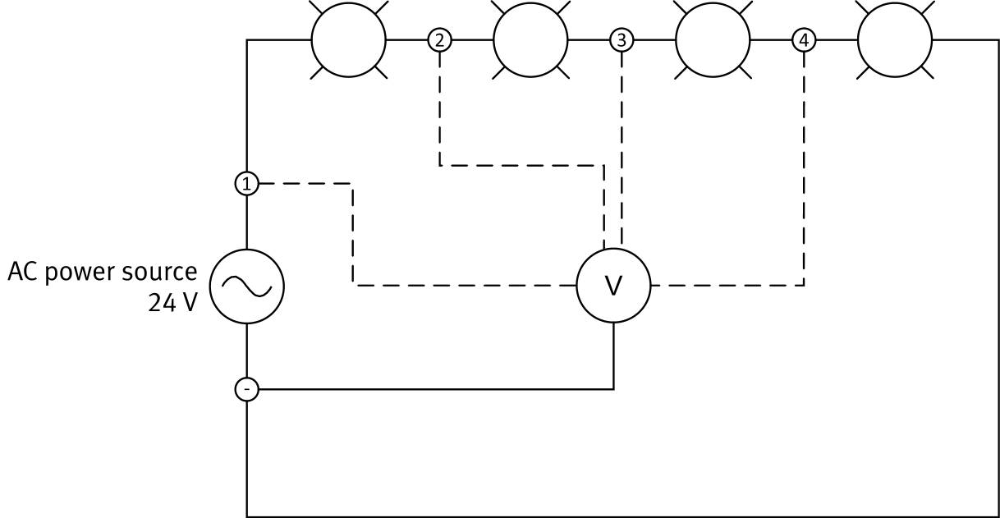
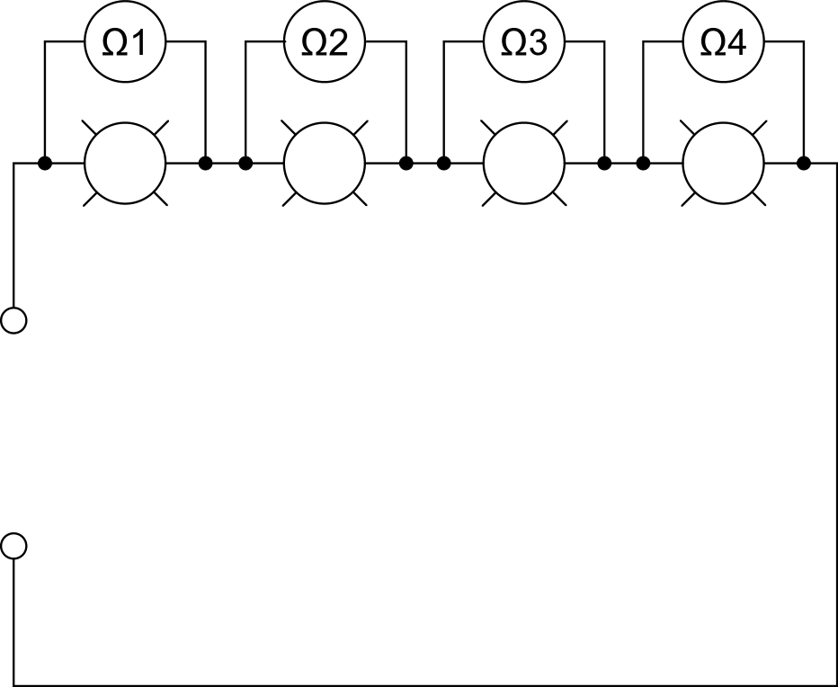
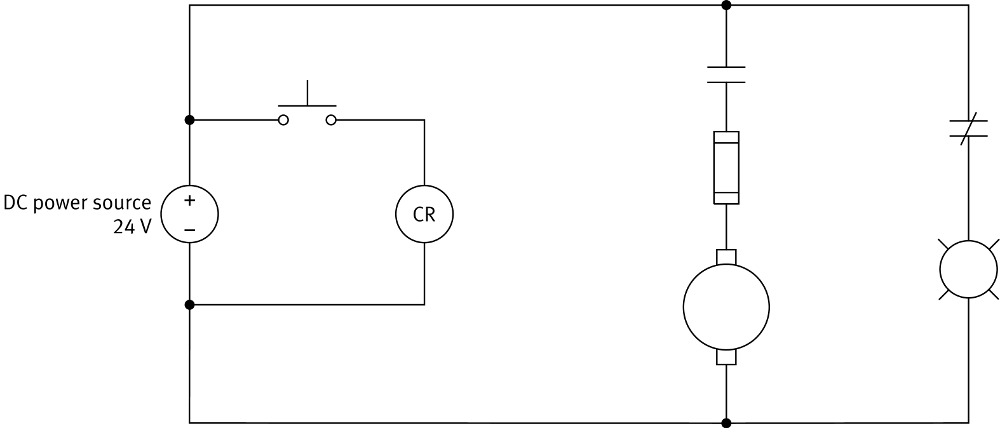

// Introduction to troubleshooting · The voltmeter method · The ohmmeter method
The electrical circuits and components used in modern industries are subject to many kinds of faults. These abnormal conditions can seriously damage the equipment or, at the very least, stop the circuit from working for a while. Either way, faults are very costly.
Current takes an unintended path with almost no resistance.
A break in the path means current cannot flow at all.
A component receives more voltage than it is rated for.
More current flows than the circuit was designed to carry.
There are several troubleshooting approaches, but most of them are a variation of the same four steps.
Watch the faulty circuit and identify all the symptoms. Many faults can be found without any testing, just by carefully observing how the circuit behaves.
Use logic to decide which component is faulty, applying the voltmeter or ohmmeter method if needed. Check the parts that fail most often first.
Work out why the component failed. Replacing a component is useless if the cause of the fault is not fixed, because the new part will just fail again.
Once the cause has been addressed, repair or replace the faulty component.
A faulty circuit does not behave the way its schematic says it should, so you cannot trust your expectations about which parts are safe.
The voltages and currents in a faulty circuit can be higher than expected.
Because of faulty connections, current can flow in parts of the circuit that should be dead. Touching them could give you a serious shock.
The voltmeter method measures the voltage applied to each component in the circuit, with the power on, and looks for any unexpected value. This diagram applies it to four identical indicator lights connected in series.

| Position | Expected | Measured |
|---|---|---|
| 1 | 24 V | 24 V |
| 2 | 18 V | 24 V |
| 3 | 12 V | 0 V |
| 4 | 6 V | not needed |
The ohmmeter method measures the resistance between the terminals of each component, which tests its continuity, and looks for any unexpected value. You can use several ohmmeters or move one ohmmeter from position to position.

Each reading tells you something about the component you measured.
An open circuit. Current cannot flow through the component. A digital multimeter shows this as OL (overload) instead of a number.
A short circuit. Current flows freely through the component.
Real parts never measure exactly their rated value, so a small difference is normal. A reading outside the component’s tolerance means it is defective, for example a 60 Ω resistor that measures 100 Ω.
The lights are identical, so each one should measure the same resistance. These are the readings from the circuit in the diagram.
| Ohmmeter | Expected | Measured |
|---|---|---|
| Ω1 | 60 Ω | 60 Ω |
| Ω2 | 60 Ω | ∞ Ω |
| Ω3 | 60 Ω | 60 Ω |
| Ω4 | 60 Ω | 60 Ω |
The circuit is powered on. One meter stays connected to the source’s negative terminal while the other lead moves along the circuit. It narrows the fault down to the section between two positions where the reading stops matching what you expect.
The power source is removed. Each component is tested on its own, and the reading tells you its condition: infinite for an open, about 0 Ω for a short, or a wrong value for a defective part.
A random fault is hidden in this circuit. Observe the lights first, then take measurements and compare each one with its expected value. Try to find the fault with as few measurements as you can.
| Pos. | Exp. | Meas. |
|---|---|---|
| 1 | 24 V | – |
| 2 | 18 V | – |
| 3 | 12 V | – |
| 4 | 6 V | – |
| Light | Exp. | Meas. |
|---|---|---|
| Ω1 | 60 Ω | – |
| Ω2 | 60 Ω | – |
| Ω3 | 60 Ω | – |
| Ω4 | 60 Ω | – |
Which choice puts the four main steps of a general troubleshooting approach in the correct order?
The dc motor does not turn on when the dc power source is started and the NO push button is pressed. Using the ohmmeter readings, where is the fault? What is the most probable explanation for it, and how can you correct the problem?

| Component | Measured |
|---|---|
| NO push button (open) | ∞ Ω |
| NO push button (closed) | 0.1 Ω |
| Relay coil CR | 460 Ω |
| NO relay contact (coil energized) | 0.1 Ω |
| NO relay contact (coil de-energized) | ∞ Ω |
| Fuse | ∞ Ω |
| DC motor | 64 Ω |
| NC relay contact (coil energized) | ∞ Ω |
| NC relay contact (coil de-energized) | 0.1 Ω |
| Indicator light | 36 Ω |